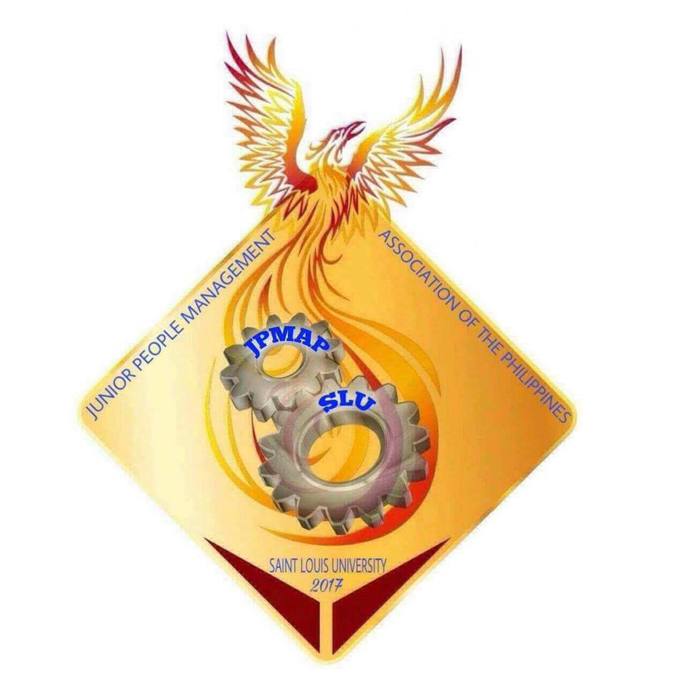
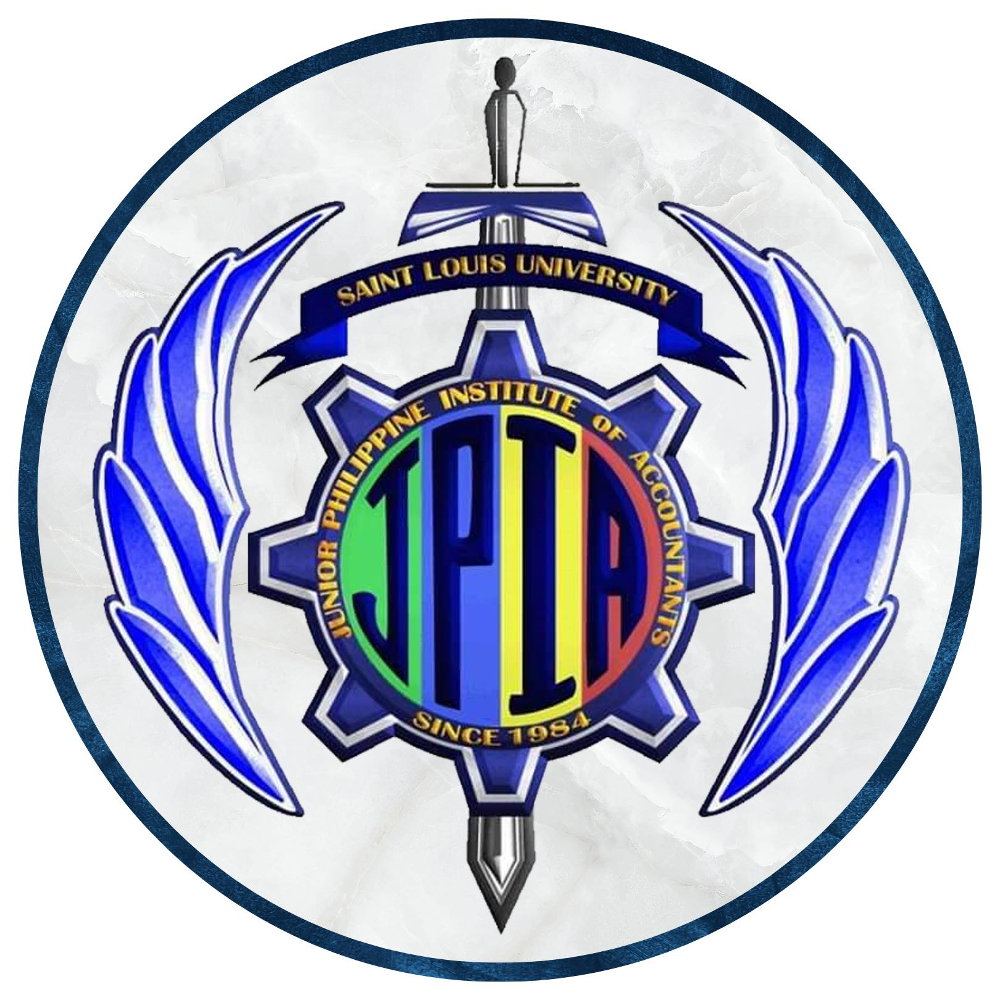
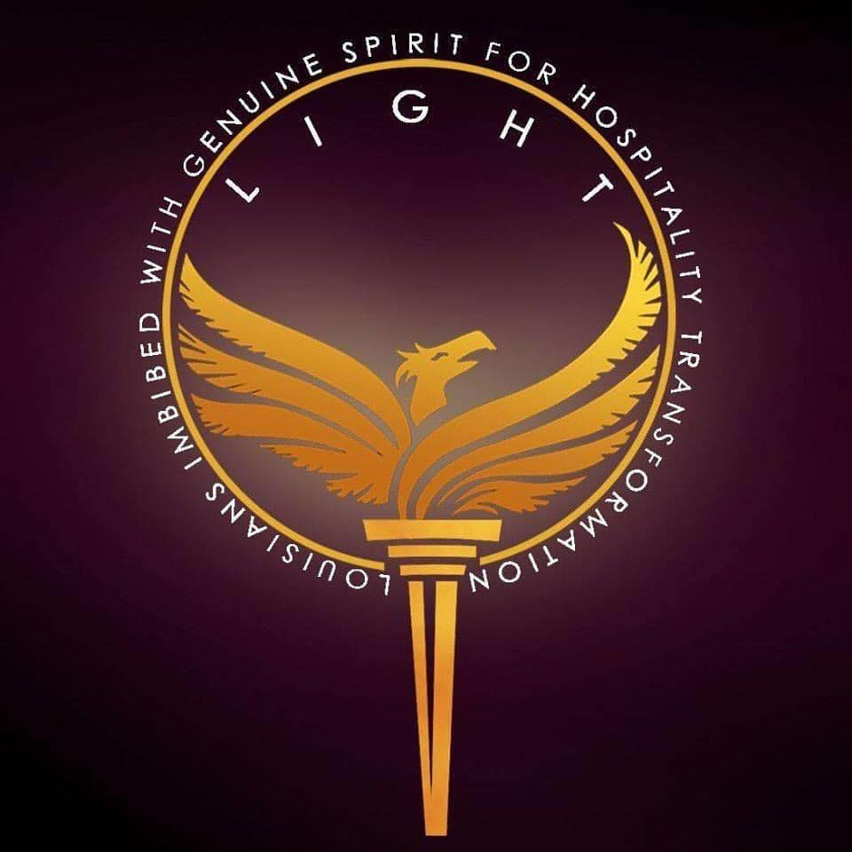

List of Organizations
Green Core Society
In order to give students a chance to contribute to the preservation of our ecosystem, specifically our planet, the GreenCore Society takes initiatives that nurture its four guiding principles in the SAMCIS community. It aims to develop events and promote sustainability. This organization was founded at Saint Louis University's School of Accountancy, Management, Computing, and Information Studies (SAMCIS).
Integrated Confederacy
A student organization that was built to enhance students' skills through offering webinars, programming activities, and a platform where students can showcase their creativity and develop their talents.
Junior Financial Executives of the Philippines Saint Louis University Chapter
A student organization that supports students' academic success by encouraging proficiency and excellence. It strengthens the teaching of financial management, offers a comprehensive social, intellectual, and moral education, develops students' coping skills, and plans events that uphold Saint Louis University's basic principles.

Junior People Management Association of the Philippines SLU Chapter
A student organization with the mission of offering opportunities for students who are interested in the human resource management profession through events, webinars, and activities.
Junior Philippine Institute of Accountants
The Junior Philippine Institute of Accountants (SLU) Chapter, established in 1984, represents aspiring accountants. The organization aims to improve the quality and standard of accounting students through educational advancement, fostering values of consciousness and discipline. JPIA also promotes fellowship and brotherhood among accounting students, familiarizing them with the nature of PICPA. Membership in JPIA lasts until the end of the academic year or expulsion.


Louisians Imbibed with Genuine Spirit for Hospitality Transformation
It aims to develop skills related to the industry through co-curricular activities and events that embody SLU's four core values. LIGHT also provides seminars, activities, workshops, lectures, and conferences to supplement students' knowledge and understanding in the industry. These fun-filled activities inspire students to become effective leaders and build relationships within the university community.
Marketing Mixers
An organization under the Philippine Junior Marketing Association (PJMA) that aims to help Marketing students socially, intellectually and morally. The organization provides activities and recognitions to improve and uplift Marketing Education.
Rated: Production Guild
A multifaceted organization that offers students a room for expressing themselves and unleashing their talents through the art of music, dance, sports, theater and photography. The Rated: Production Guild has 5 Guilds in total:
SCHEMA
The official publication of the School of Accountancy, Management, Computing, and Information Studies. Come and join us as we serve the studentry with social and political awareness through the use of journalism, literacy, arts, and multimedia, while adhering to the rules and regulations of the Campus Journalism Act of 1991. The organization can serve as a training ground for students aspiring to become experts in writing and technical skills.
Society of Integrated Commercians for Academic Progress (SICAP)
Through academic and extracurricular activities, the Society of Integrated Commercians for Academic Progress (SICAP) seeks to advance the intellectual, social, physical, and spiritual elements of students from SAMCIS. Through integral human formation, SICAP seeks to promote and cultivate potential advancements while bringing together Commercians regardless of cultural differences. We want to help the community of entrepreneurs find fulfillment by offering technical support, educational assistance, and counseling.
Young Entrepreneurs’ Society
The Young Entrepreneurs' Society is a group that provides Louisian entrepreneurs with an opportunity to grow and maximize their potential in terms of abilities, skills, talents, creativity, and innovativeness. Additionally, it strengthens and enhances the entrepreneurial skills that will enable each person to become a socially outstanding entrepreneur.